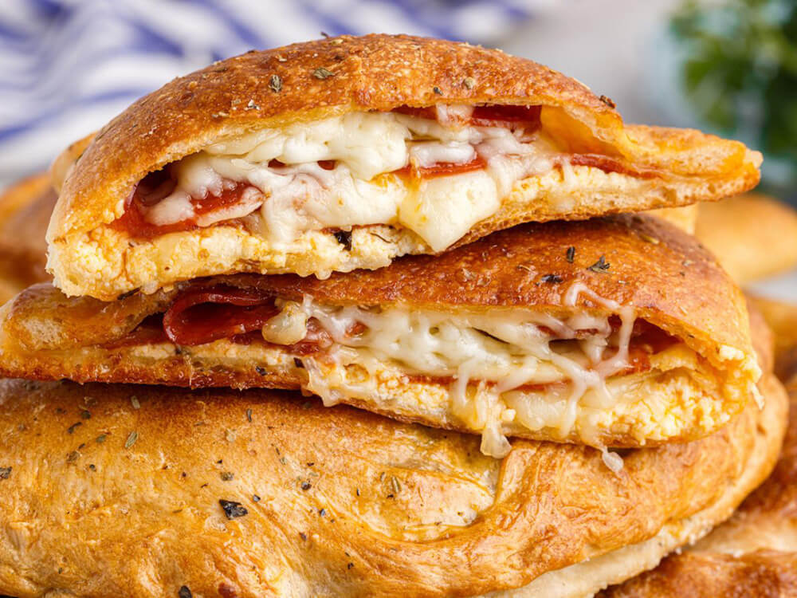

Calzone

Back to Home
Description
A calzone is a half-moon shaped Italian turnover made by folding pizza dough over a filling of ricotta, mozzarella, and your choice of meats or vegetables, creating a sealed pocket of deliciousness.
Ingredients
- 1 pound pizza dough
- ½ cup pizza sauce
- ½ cup diced onion
- ½ cup diced green bell pepper
- ½ cup sliced pepperoni
- 1 cup shredded mozzarella cheese
- 1 tablespoon olive oil
Steps
- Preheat oven to 425°F and line a large sheet pan with parchment paper.
- Divide pizza dough into 4 equal parts and roll each dough ball into a 1/4 inch thick circle.
- On half of each dough circle, add equal parts sauce, yellow onion, green bell pepper, and sliced pepperoni. Make sure to leave a little room around the edges so you can crimp the calzone shut.
- Sprinkle the toppings with equal parts shredded cheese. Then fold the other half of the dough over the toppings and crimp the edges.
- Cut 2-3 air vents into the top of the calzone and place it on to the prepared baking sheet.
- Brush with olive oil and bake for about 15 minutes or until the dough is fully cooked and the calzone is golden brown.
- Serve with warmed pizza sauce for dipping.